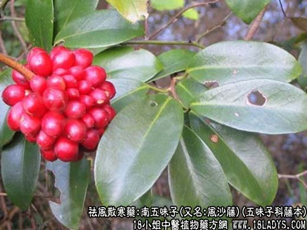
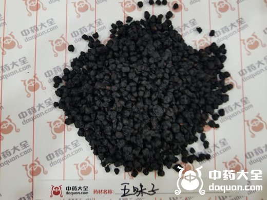

【中药概述】
【南五味子_五味子的功效与作用_五味子的副作用】
植物名：南五味子。
生长环境：本品为扳援状灌木，生于山谷密林下或灌木丛中。
分布：我国东南部；广州近郊亦有。
入药部分：根、茎。
采集期：全年。
采购地点：丛药材公司购进。
性味：性微温、味微甘、气香。
功能：祛风散寒、止痛。
主治、用量和用法：①呕吐霍乱：干用5钱至1两，清水煎服；②风寒腹痛：干用5钱至1两，清水煎服；③跌打积瘀，配伍用。
验方：1（治跌打积瘀方）：风沙藤、黑老虎、鸡骨香、入地金牛根、金钮头、五爪龙活血通络。合成行气活血散瘀之剂。
（方歌）跌打积瘀风沙藤，金牛黑虎金钮头，鸡骨香五爪龙蔃，六味同煎立建勋。
验方：2（治风痧肚痛经验方）：苦地胆5钱，樟木子5钱，风沙藤5钱，清水煎服。
（方解）风痧病乃因感冒时邪风而致：头痛腰酸，身热出汗，咳嗽肚痛，不可误治。因痧味厉毒之气，宜用开泄之法，本方以风沙藤为主药，其作用类似黑老虎、善治风痧肚痛。配以苦地胆，苦凉泄热，樟木子辛温祛风，行气止痛。全方以温通苦泄为原则，立法精简，功效确切。
（方歌）风痧肚痛风沙藤，苦凉泄热地胆均，行气止痛樟木子，祛风开泄法堪珍。